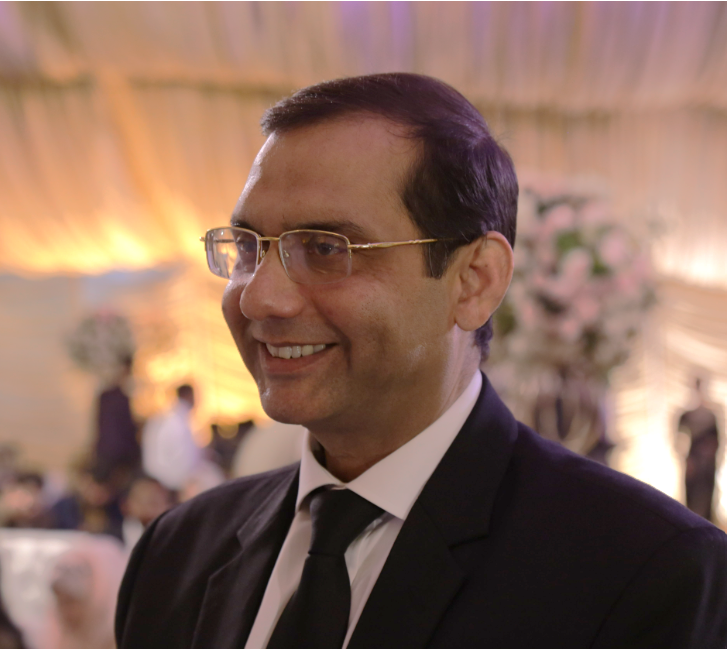

Human-centered
Designed around education, healthcare, agriculture, cities and society.
TİKA-funded academic collaboration
A focused AI research lab at the University of the Punjab, built through Pakistan–Türkiye cooperation.
About
Designed around education, healthcare, agriculture, cities and society.
Connecting the University of the Punjab with TİKA-supported Pakistan–Türkiye cooperation.
Focused on practical, low-cost and real-time AI outcomes.
Collaboration
The initiative is shaped by senior university leadership committed to quality education, practical knowledge, and high-impact computing research.
Vice Chancellor, University of the Punjab
“My mission is to raise the productivity of our graduates through quality education and practical knowledge to contribute in a significant way to the national economy.”

Dean, Faculty of Computing and Information Technology
"My mission is to provide quality education, hands-on research, and increase Pakistan's footprint in the global IT and software industry."
Facilities
A connected lab environment for data, computing, development, networking and reliable operations.
Technical outcomes
Low-cost, real-time, personalized and humanistic systems.
Personalized learning and assessment through natural language processing.
Crop disease, precision agriculture, autonomous vehicles and patient care.
Field assistance, drone surveillance and surveying workflows.
Diagnostics, drug discovery, DNA sequencing and medical imaging.
IoT, smart metering and transportation intelligence.
Machine learning, deep learning, data science, NLP and visualization.